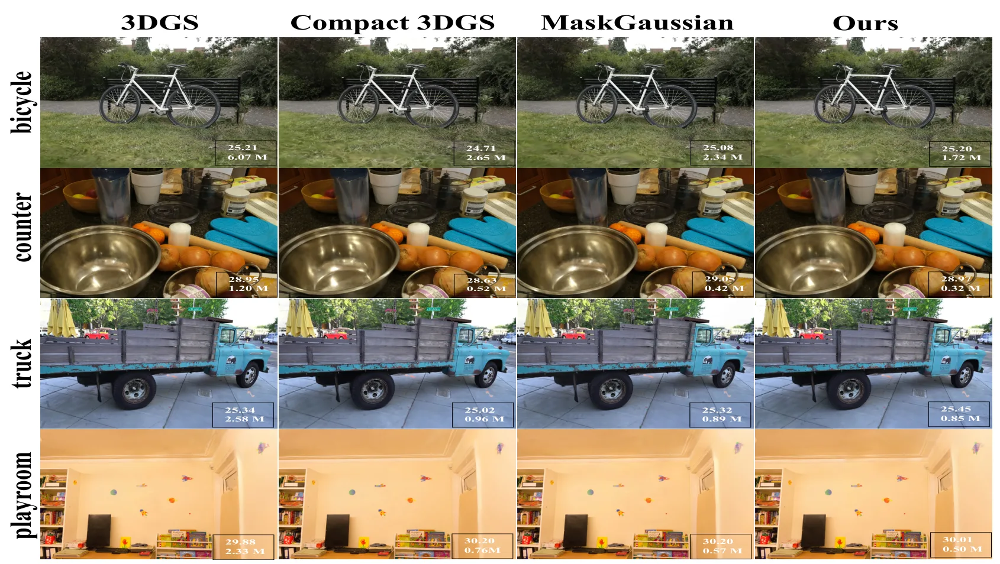
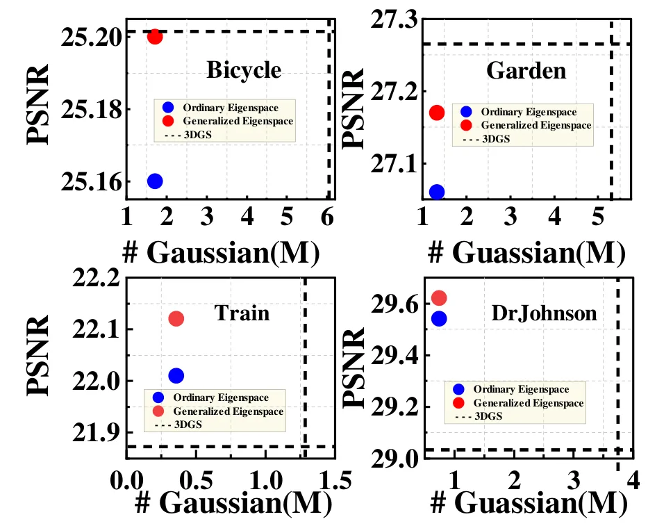
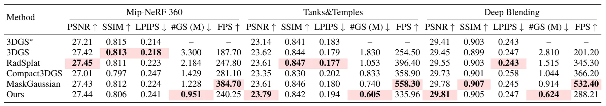
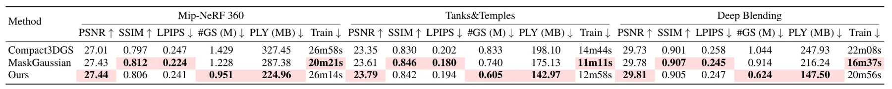
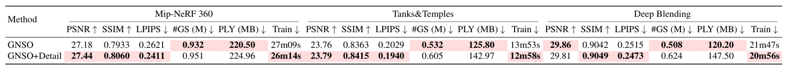

QIRF：3D Gaussian 的量子启发式非正交函数空间压缩QIRF Quantum-Inspired Non-Orthogonal Function-Space Compression for 3D Gaussian Splatting
压缩切入点新且定量结果完整；广义特征分解开销、压缩元数据和更强码率基线仍待核查。
一句话工作总结
从重叠 Gaussian 的非正交函数空间冗余出发做子空间选择，实现约 3.54× 压缩和 34.3% 渲染加速。
摘要
QIRF 将相邻 Gaussian primitives 视作局部非正交基，通过解析 Gaussian overlap matrix 与 radiance-response density matrix 描述函数冗余和渲染相关性，再以广义特征分解选择主导子空间的代表 Gaussian。RRDM response model 与细节保护机制用于保留高频结构。13 个场景上平均减少 71.7% Gaussian 数量和原始 PLY 存储，约 3.54 倍压缩，在质量接近 3DGS 时平均 PSNR 微增 0.10 dB，渲染速度提高 34.3%。
3D Gaussian Splatting (3DGS) achieves high-quality real-time rendering by representing a scene with a large collection of anisotropic Gaussian primitives. However, complex scenes often require millions of Gaussians, resulting in substantial storage and rendering costs. Existing compression methods mainly reduce redundancy through primitive-wise pruning, attribute quantization, clustering, or neural coding, while redundancy caused by strongly overlapping and non-orthogonal Gaussian basis functions remains largely unexplored. We present QIRF, a quantum-inspired non-orthogonal function-space compression method for 3D Gaussian Splatting. QIRF models neighboring Gaussian primitives as a local non-orthogonal basis and formulates primitive reduction as a subspace-aware selection problem. Specifically, an analytic Gaussian overlap matrix and a radiance-response density matrix are constructed to characterize functional redundancy and rendering relevance. Generalized eigendecomposition is then used to identify the dominant local subspace and select representative Gaussian primitives. An RRDM-based response model and detail-aware safeguarding further preserve visually important high-frequency structures under aggressive pruning. Experiments on 13 scenes from Mip-NeRF 360, Tanks and Temples, and Deep Blending show that QIRF reduces the Gaussian count and raw PLY storage by 71.7 percent on average, corresponding to approximately 3.54 times compression, while maintaining reconstruction quality comparable to 3DGS and achieving a marginal average PSNR improvement of 0.10 dB. QIRF also improves the average rendering speed over 3DGS by 34.3 percent. These results suggest that non-orthogonal function-space redundancy is an important yet underexplored source of representational redundancy in explicit Gaussian radiance fields.
中文解读摘录
图表/页面预览

{kind=link}

{kind=link}

{kind=link}

{kind=link}

{kind=link}
